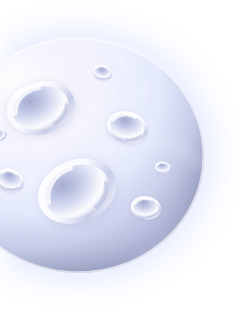

Открой невозможный мир: мосты из лепестков, пруды и сады, зависшие между башнями. Они не растут из земли — они рождаются из тумана.
4 дня, 3 зала,
12 инсталляций и ночной маршрут

Подвесные сады
связывают воздушные
башни живыми
тропами из лепестков.
Ночные цветы открываются
в серебряном свете
и едва слышно звенят.
Подвесные бассейны света, лепестки на тонких мостах и воздух, который звенит.
мосты / отражения / серебряные цветыЦветы-спутники вращаются вокруг больших сфер, словно вокруг собственных планет.
орбиты / сферы / ночное свечениеЛёгкие конструкции и длинные листья движутся так, будто их ведут невидимые течения.
ветер / звук / длинные арки
19:00 — вход в город
20:00 — маршрут
21:30 — световой пролог
26 МАЯ / открытие13:00 — ботаника вымысла
16:00 — беседа об утопиях
18:00 — разговор о свете
27 МАЯ / лекции12:00 — мастерская формы
15:00 — рисование маршрута
19:00 — медленный обход
28 МАЯ / практика14:00 — семейный маршрут
18:00 — обсуждения
20:00 — закрытие и финал
29 МАЯ / финал
26–29 мая
12:00–22:00
Вход открывается каждые 30 минут, чтобы маршруты не смешивались.Стандартный — 900 ₽
Открытие — 1300 ₽
Студенческий — 600 ₽
Семейный — 1800 ₽